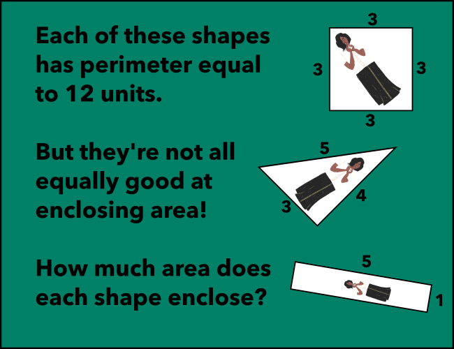

## Chapter 2: The Ghost of Elections Present Another ghost? Life just keeps getting stranger...
Exercise 5
Move all three sliders into the correct positions.
Correct! The square has 9 units of area, giving it the highest area to perimeter ratio of the three given shapes.
The sliders are not in the correct positions yet! Keep working.